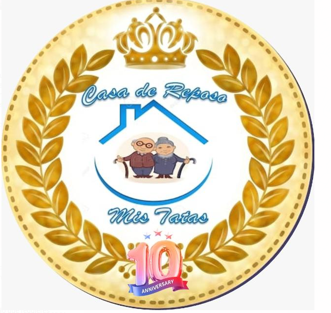

♡
Actividades recreativas
Momentos de movimiento, alegría y convivencia.

Conecta AyudaJuntos por un mejor mañanaTu solidaridad puede convertirse en compañía, bienestar y una mejor calidad de vida para quienes más lo necesitan.
Sé parte del cambio ♡Momentos de movimiento, alegría y convivencia.
Espacios para crear, aprender y compartir.
Visitas y actividades para brindar compañía.
Las actividades y fotografías se pueden actualizar con información real del asilo.
Elige una opción y conecta con nosotros por WhatsApp:
La Casa de Reposo Mis Tatas brinda la posibilidad de realizar prácticas y actividades formativas para estudiantes de medicina, con certificados según las condiciones y coordinación del asilo.
Solicitar información →Conecta Ayuda busca acercar a personas solidarias a la Casa de Reposo Mis Tatas. A través de donaciones, voluntariado y servicio comunitario, todos podemos contribuir al bienestar de los adultos mayores.